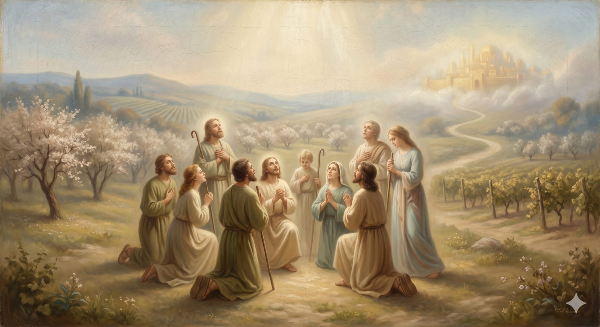

The Land of Beulah
The sweet country in sight of the City — drawing near to a holy God, the fear that is love's truest form, and the life of worship.
"You shall no more be termed Forsaken... but you shall be called My Delight Is in Her, and your land Married." Isaiah 62:4 (ESV)
The road comes out of the Enchanted Ground into a country Bunyan calls the Land of Beulah — a word from the prophet Isaiah meaning married — and everything changes. The air is sweet. Birds sing all day. The sun shines night and day, for this country is beyond the reach of Doubting Castle and out of sight of the Valley of the Shadow. The pilgrims can see the Celestial City itself now, not through a hazy glass but with their own eyes, gleaming across the river; and they are so overwhelmed by its nearness that, Bunyan says, they grow lovesick with longing for it. Here the gardeners tend the King's own grounds, and the pilgrims walk among them, refreshed, waiting at the border of home.
This is the country of nearness — the life of worship and communion with God that the whole journey has been climbing toward. After the doctrine and the discernment of the mountains, Beulah is what knowing God finally feels like when the distance closes: not a lesson about him, but the warmth of his nearness, and a longing for more of him that has become the dominant note of the soul. It is worth asking what kind of nearness this is, because it is easy to mistake.
Part OneThe fear that draws near
The God whose City now fills the horizon is the same God the mountains named: holy, set apart in a purity that would consume us if we approached it unprotected. And so the nearness of Beulah is not casual. Scripture's word for the right posture before this God is the fear of the LORD — and that phrase is badly misunderstood if it is heard as cringing dread. The fear of the LORD is not the opposite of love for him. It is love's truest form: the reverence that rises in a soul that has finally seen clearly who God is and who it is before him.
Here is the wonder at the center of Beulah: in Christ, this holy God may be drawn near to. Majesty and intimacy, which we assume must pull against each other, turn out to be held together perfectly in him. The God who is a devouring fire is also the Father who runs to meet his child; the One before whom the seraphim cover their faces is the One who invites us to call him Father. The pilgrim in Beulah is not less in awe as he draws nearer — he is more. Real intimacy with God deepens reverence rather than dissolving it, the way standing close to something vast and beautiful makes you feel its size more, not less.
In plain terms
"The fear of God" doesn't mean being scared of him. It means the awe that comes from seeing him clearly — the same kind of reverence you feel standing at the edge of the ocean or under a sky full of stars, except aimed at a Person who loves you.
And the astonishing thing the gospel adds is that this overwhelming God can be drawn near to. You don't have to choose between awe and intimacy. In Christ you get both.
Part TwoWhat the whole journey was for
It is worth saying plainly, here near the end, what all of it has been for — because it is easy to lose in the machinery of doctrine and discipline. The goal was never correct theology. It was never even membership in the community, or answered prayer, or a well-ordered life. The goal was God himself. Everything else on this road has been downstream of this: the desire to know and love and enjoy him, and to be known and loved by him, forever.
An old hymn-writer put it as plainly as it can be put: my goal is God himself — not joy nor peace, nor even blessing, but himself, my God. That is what Beulah is: the place where the gifts have finally given way to the Giver, where a pilgrim wants not mainly heaven's comforts but heaven's God. And the love that fills this country is not something the pilgrim worked up. We love because he first loved us — the longing itself is a gift, kindled by the One it reaches for. The whole road has been the slow education of desire, until a heart that once dug broken cisterns now aches for the fountain and nothing less.
Part ThreeWorship as the shape of nearness
What does a soul do in such a country? It worships — and worship, rightly understood, is simply what the seeing produces. It is a whole life re-oriented around the worth of God: not merely songs, though it includes them, but the offering back to God of everything he has given, in gladness. In Beulah the pilgrims are not performing duties to earn entrance; they have long since been clothed for the feast. They are simply near, and glad, and full of longing — and that gladness spills over into praise the way light spills from a fire. This is worship at its source: not a thing demanded of the reluctant, but the natural overflow of a soul that has come close enough to see.
The goal was never the gifts. It was the Giver — and in Beulah the longing has finally found its right object.
And so the pilgrims wait at the border, lovesick for home, the City shining just across the water. But between Beulah and the gates there is one last thing, and it is the thing every traveller on this road must come to at the end. There is no bridge. Between the borderland and the City runs a deep river, and the only way across is through it.